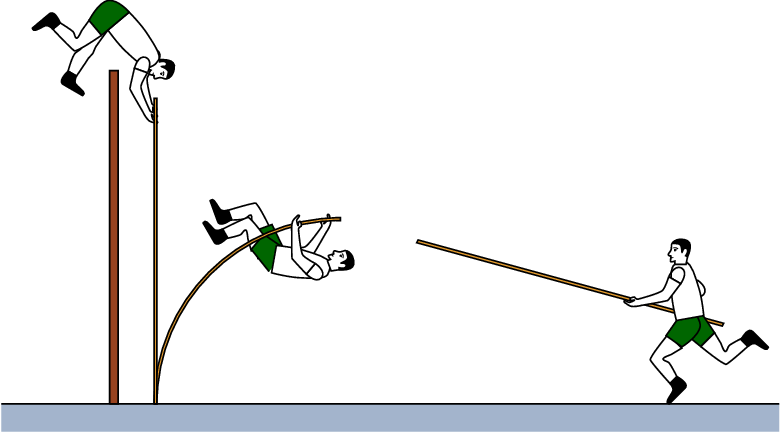
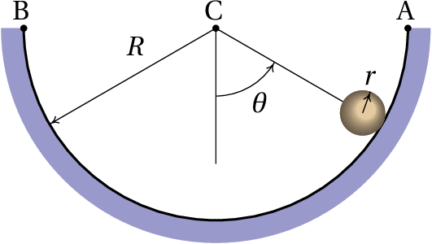
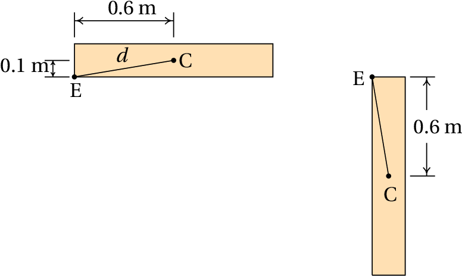

A lei da gravitação universal estabelece que qualquer corpo celeste de massa produz uma força atrativa sobre qualquer outro corpo de massa , dada pela expressão:
onde é a constante de gravitação universal, é a distância entre os dois corpos e é o versor radial, que aponta desde o corpo de massa até o corpo de massa . (a) Determine a expressão para a energia potencial gravítica devida ao corpo de massa . (b) Tendo em conta o resultado da alínea anterior, como se justifica a equação 6.17, , para a energia potencial gravítica de um objeto na Terra?
(a) Em coordenadas esféricas, o deslocamento infinitesimal é
Onde e são dois ângulos (medidos desde o semieixo positivo dos e no plano desde o semieixo positivo dos ) e os três versores , e são perpendiculares entre si. Assim sendo, o produto escalar da força gravítica com o deslocamento infinitesimal é igual a:
Por depender de apenas uma variável, conclui-se que o integral de linha de não depende do percurso de integração e a força gravítica é uma força conservativa. A energia potencial associada a essa força conservativa é igual a menos uma primitiva qualquer da força
(b) Para um valor qualquer , a série de Taylor de é:
O primeiro termo é uma constante, que pode ser ignorada, porque a energia potencial pode incluir sempre uma constante arbitrária com qualquer valor. No segundo termo, substituindo pelo raio da Terra, é então a altura desde a superfície da Terra e é igual à constante . Ignorando o resto da série, que para valores de muito menores que não altera significativamente a soma dos dois primeiros termos, obtém-se .
Num salto com vara, um atleta de 70 kg usa uma vara uniforme de 4.5 kg com 4.9 m de comprimento. O salto do atleta tem três fases: primeiro o atleta corre, com o seu centro de gravidade a 1 m de altura e com o centro de gravidade da vara a 1.5 m de altura, com velocidade de 9 m/s no instante em que possa a vara no chão. Na segunda fase, a energia da corrida é transferida para a vara, que se deforma e volta a esticar ficando vertical e elevando o atleta até uma altura próxima da altura da fasquia (desprezando forças dissipativas, até aqui a energia mecânica é constante). Finalmente o atleta estende os braços, aumentando a sua energia mecânica até o seu centro de gravidade subir a 5.8 m de altura, conseguindo ultrapassar a fasquia a 5.6 m. (a) Determine o trabalho realizado pelo saltador quando estende os braços. (b) Determine a força média que o saltador exerce sobre a vara na terceira fase.
Na primeira fase, a energia mecânica do sistema é igual à energia cinética do conjunto atleta-vara, mais as energias potenciais gravíticas do atleta e da vara. Medindo as alturas desde o chão, essa energia mecânica é:
(a) Na terceira fase, após o atleta ter estendido os braços alcançando o ponto mais alto, ele e a vara estão em repouso nesse instante: a altura do centro de massa do atleta é 5.8 m e a altura do centro de massa da vara, na posição vertical, é metade do seu comprimento. A energia mecânica nessa terceira fase é igual à soma das energia potenciais gravítica do atleta e da vara:
O trabalho realizado pelo atleta é igual ao aumento da energia mecânica desde a fase 1 até a fase 3:
(b) A energia mecânica na segunda fase, , é igual a , porque nas fases 1 e 2 há conservação da energia mecânica. Como na fase dois o atleta e a vara estão em repouso, a energia mecânica é igual à energia potencial gravítica:
Igualando essa expressão ao valor obtido para , encontra-se a altura que o atleta atinge, antes de estender os braços:
A força média é igual ao trabalho dividido pelo aumento da altura entre a segunda e a terceira fase:
Resolva o problema 7 do capítulo 4 aplicando o teorema do trabalho e a energia mecânica. A força exercida pelo bloco sobre o cone, quando o cone penetra no bloco, é uma força conservativa ou não?
Como o cone está em repouso nas posições inicial e final, quando estava 30 cm acima do bloco e após penetrar 5 cm no bloco, não há variação da energia cinética nesse percurso e a diminuição da energia mecânica é igual à diminuição da energia potencial gravítica nesse percurso:
Valor esse igual ao trabalho da força do bloco no cone, enquanto este penetra o bloco (a resistência do ar está a ser desprezada):
Essa expressão conduz ao valor . Como as unidades de são newton, então as unidades da constante são N/m . A força do bloco não é conservativa, porque só atua quando o cone está a penetrar; se o cone voltasse a subir, após ter penetrado no bloco, o bloco já não produzia nenhuma força sobre o cone. Ou seja, a força do bloco depende implicitamente da velocidade, porque é diferente quando o cone está a descer (velocidade negativa) ou quando está a subir (velocidade positiva) e quando o cone pára, essa força não é proporcional a .
Uma esfera de raio roda, sem deslizar, dentro de uma calha semicircular de raio , que está num plano vertical (ver figura).
(a) Demonstre que, em função da derivada do ângulo , a energia cinética da esfera é
(b) Desprezando a resistência do ar, a energia mecânica é constante e a sua derivada em ordem ao tempo é nula; derive a expressão da energia mecânica em ordem ao tempo e iguale a zero para encontrar a expressão da aceleração angular em função do ângulo.
(c) Entre que valores deve estar a energia mecânica para que a esfera permaneça oscilando dentro da calha?
(d) A partir do resultado da alínea b, determine a expressão para , no limite quando o raio da esfera é muito menor que o raio da calha ( ) e explique porque o resultado é diferente do resultado obtido para o pêndulo simples no problema 6.
(a) A trajetória do centro de massa da esfera é um arco de círculo com ângulo e raio ; como tal, a velocidade do centro de massa é
Como a esfera não desliza, a velocidade do ponto de contacto com a calha é 0. A velocidade angular é a velocidade do centro de massa, menos a velocidade do ponto de contacto, dividida pela distância entre eles
A energia cinética da esfera é
Usando as expressões do momento de inércia da esfera (tabela 5.1), da velocidade do centro de massa e da velocidade angular, obtém-se
(b) A energia mecânica é
e a sua derivada em ordem ao tempo é
Igualando a zero obtém-se
(c) A energia mínima é quando a esfera fica no ponto mais baixo da calha ( ) com velocidade nula ( ):
e a energia máxima é quando a esfera chega até o ponto A ( ) com velocidade nula ( ):
(d) O valor absoluto de é menor num fator 5/7, devido a que parte da energia potencial gravítica é transformada em energia cinética de rotação da esfera. A energia cinética de rotação é sempre 2/5 da energia cinética de translação, independentemente do valor de ; no limite também 2/7 da energia gravítica são convertidos em energia de rotação e apenas os restantes 5/7 fazem aumentar .
Do ponto de vista das forças, no caso do pêndulo não há nenhuma força oposta ao movimento do centro de massa, enquanto que neste caso a força de atrito estático é oposta ao movimento do centro de massa. No entanto, essa força não realiza nenhum trabalho porque o ponto da esfera onde é aplicada não se desloca e a força de atrito não reduz a energia mecânica da esfera; simplesmente faz com que a energia fornecida pela gravidade sela distribuída entre energias cinéticas de translação e de rotação.
Resolva o problema 13 do capítulo 5 aplicando o princípio de conservação da energia mecânica.
A figura seguinte mostra as posições inicial e final da tampa da janela. C é o centro de massa e E o eixo das dobradiças.
Como a velocidade do ponto E é nula, a velocidade do centro de massa é , onde é a velocidade angular da tampa. O momento de inércia, em torno do eixo perpendicular à figura, passando pelo centro de massa C, é dado pela expressão para um paralelepípedo na tabela 5.1:
A expressão da energia cinética da tampa, em função da velocidade angular é:
Em função da altura do centro de massa, a energia potencial gravítica é:
Por conservação da energia mecânica, deve ser igual nas posições inicial e final. Medindo desde o ponto E, obtém-se:
Que conduz ao valor da velocidade angular na posição final: